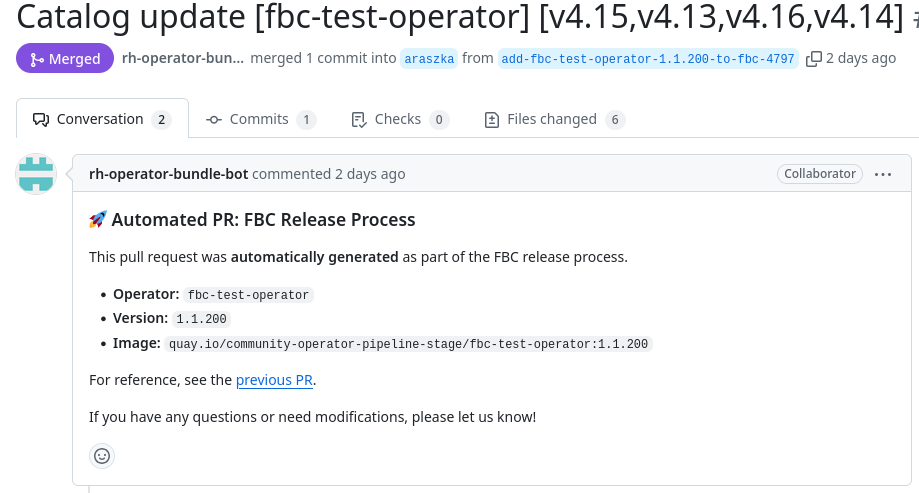

File-Based Catalog - auto-release
By the nature of the File-Based Catalog (FBC) mode, the release of operator is made of two steps.
- The first step builds, tests and releases bundle image
- The second step adds a bundle to OCP catalog and releases it
The second step can be now automated and user is no longer required to manually create a second PR with catalog changes. The release pipeline will take care of it.
The process will require an additional configuration in the release-config.yaml file.
Once a PR with new bundle and release-config.yaml is merged, the release pipeline will
open a new PR with catalog changes.
Example of such PR can be found here. The second PR is linked with it original PR and looks like this:

release-config.yaml
If you want your operators to be automatically released to the OCP catalogs in the FBC mode,
you will need to configure the release-config.yaml file. The file should be placed
into the bundle version directory, e.g. operators/aqua/0.0.2/release-config.yaml.
tree operators/aqua
.
├── 0.0.2
│ ├── release-config.yaml # This is the file
│ ├── manifests
│ └── metadata
├── catalog-templates
├── ci.yaml
└── Makefile
Its content determines where exactly the bundle will be released in terms of the OCP version and the place in the update graph.
Example
---
catalog_templates:
- template_name: basic.yaml
channels: [my-channel]
replaces: aqua.0.0.1
- template_name: semver.yaml
channels: [Fast, Stable]
The example above shows a release configuration where operator bundle is going to be
released to the my-channel channel in the basic.yaml catalog template and to the
Fast and Stable channels in the semver.yaml catalog template.
The replaces field is optional and it specifies the bundle that the new bundle
replaces in the update graph.
File structure
The schema of the file is available here: release-config.yaml schema. The schema is validated automatically in the pipeline and the PR will fail with explanations if the file is not valid.
Here is a summary of the file structure:
- The top-level key is
catalog_templateswhich is a list of objects. - Each object has the following keys:
template_name- the name of the catalog template file in thecatalog-templatesdirectory.channels- a list of channels where the bundle should be released.- In case of using
SemVera user can pick from allowed values:Fast,StableandCandidate.
- In case of using
replaces- the bundle that the new bundle replaces in the update graph. (Optional, only for the basic templates)skips- a list of bundles that should be skipped in the update graph. (Optional, only for the basic templates)skipRange- a range of bundles that should be skipped in the update graph. (Optional, only for the basic templates)